🏝️ 沖繩之旅 2026
2026年7月19日 - 7月25日 | 7天6夜
👨👩👧👦 盧家四口
👨👩👦 方家三口
✈️ 台中↔沖繩
🚕 Day1-2：那霸市區
🏨 Day3-7：BEB5 北部
北部（名護・本部・今歸仁）
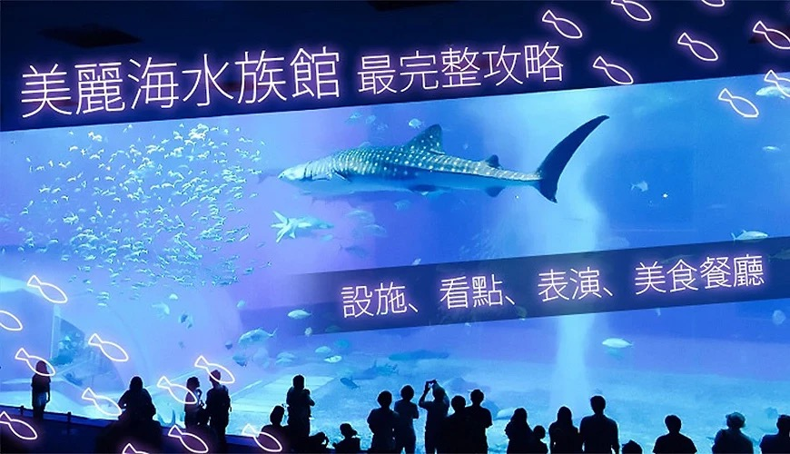
🌟 景點⭐⭐⭐⭐⭐ (4.5)美ら海水族館（美麗海水族館）
沖繩美ら海水族館是大家初次來沖繩必訪的景點，館內有7,500立方公尺的「黑潮之海」水槽，是世界最大的水槽之一。
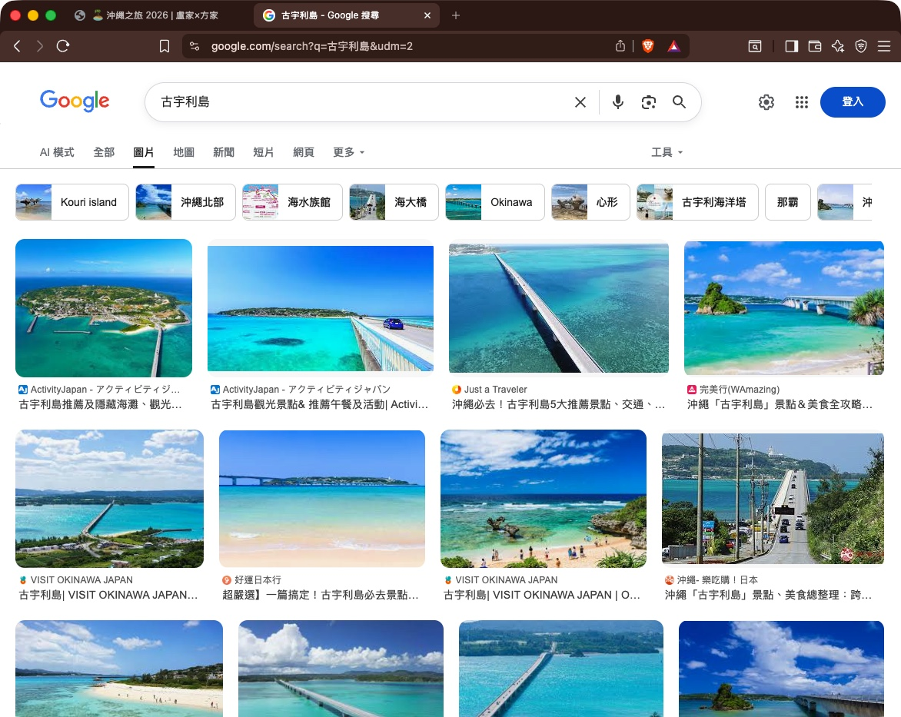
🌟 景點⭐⭐⭐⭐ (4.4)古宇利島
古宇利島是琉球神話起源的「神之島」，更是情侶聖地「戀之島」。島上有著多處未經人為破壞的美麗海灘。
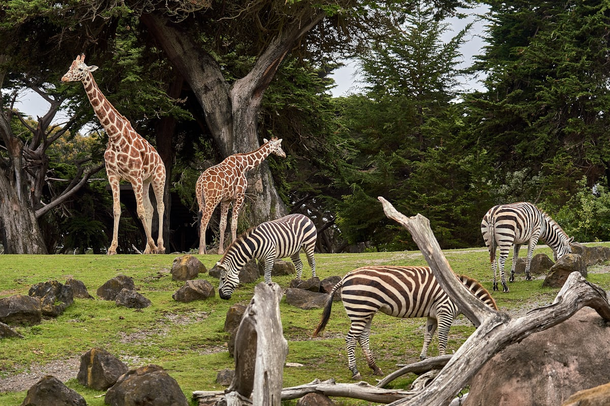
🌟 景點⭐⭐⭐⭐ (4.5)沖繩兒童王國
Okinawa Zoo & Museum是結合動物園和博物館的主題樂園，位於沖繩縣北部。⭐芃芃最愛！
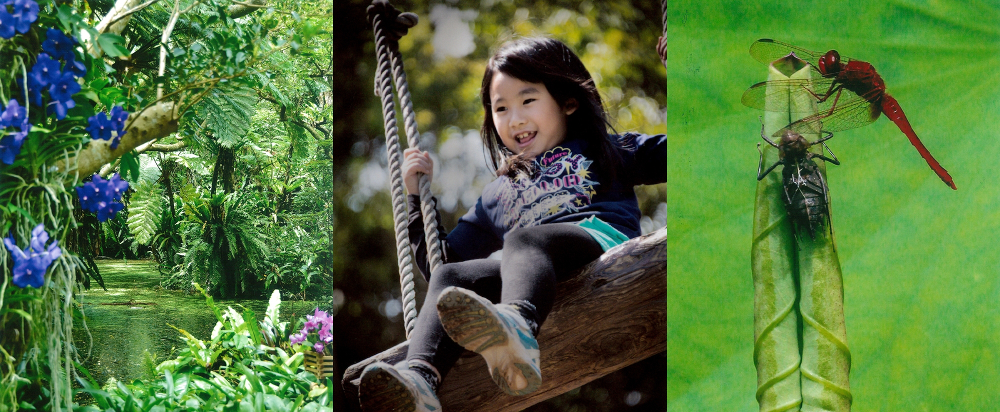
🌟 景點⭐⭐⭐⭐ (4.1)BIOS之丘
以亞熱帶自然森林為背景的主題樂園，可搭乘小船漂流森林運河，近距離接觸可愛動物。
中部（恩納・北谷・浦添）
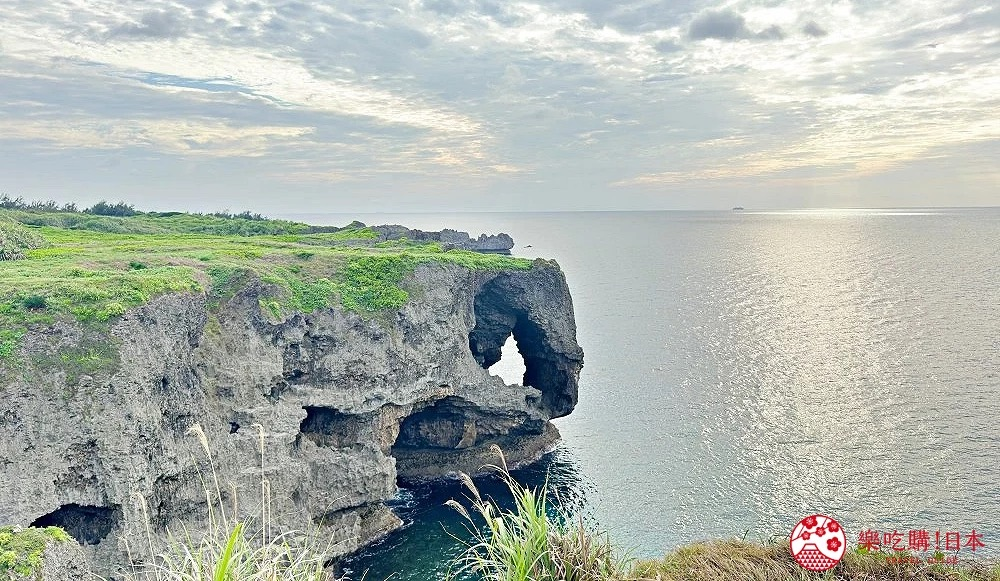
🌟 景點⭐⭐⭐⭐ (4.3)萬座毛
萬座毛位在沖繩海岸國定公園內，名字原意為「可供萬人齊坐的草原」，最大特色就是象鼻岩、遼闘草原及無敵海景。
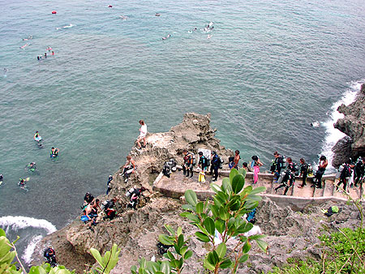
🌟 景點⭐⭐⭐⭐ (4.4)青之洞窟
沖繩最著名的洞窟潛水點，因陽光折射呈現神秘湛藍光芒，吸引大量潛水客和浮潛爱好者朝聖。
 🌟 景點⭐⭐⭐⭐ (4.2)
🌟 景點⭐⭐⭐⭐ (4.2)中城公園
日本最大型的戶外體能挑戰公園，結合繩索、雲梯、平衡木等設施，適合各年齡層挑戰。
 🌟 景點⭐⭐⭐⭐ (4.3)
🌟 景點⭐⭐⭐⭐ (4.3)港川外人住宅
美軍遺留的彩色住宅區，巷弄間處處是可愛小店和咖啡館，是近年最夯的文青打卡勝地。
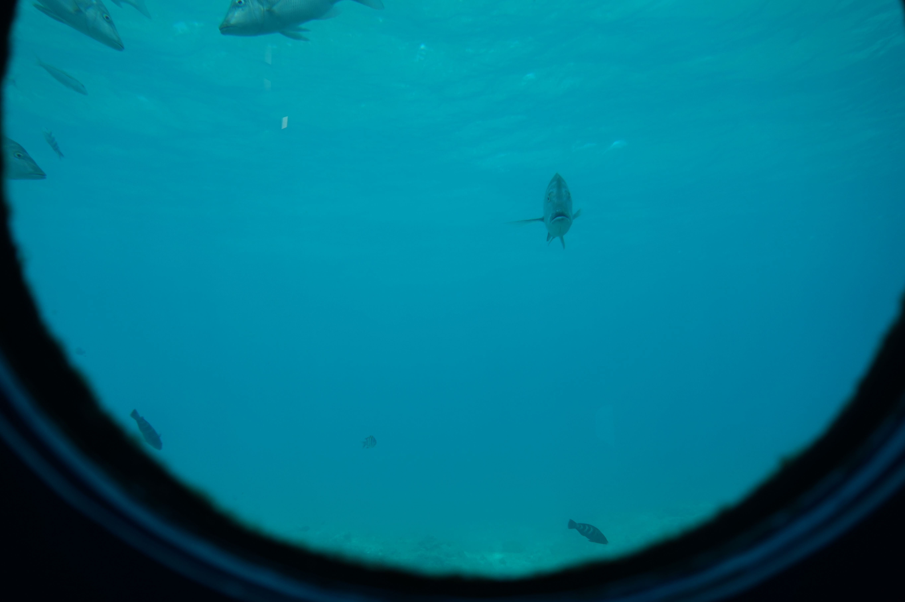
🌟 景點⭐⭐⭐⭐ (4.2)部瀨名海中公園
可乘坐玻璃底船或走入海中展望台的海中公園，透過船底透明玻璃即可觀賞珊瑚礁和熱帶魚群。
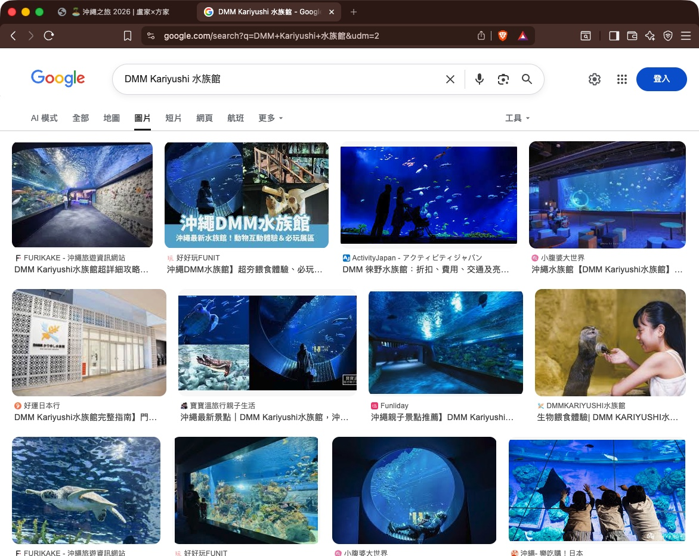
🌟 景點⭐⭐⭐⭐ (4.3)DMM Kariyushi水族館
DMM Kariyushi水族館是2020年新開幕的設施，位於豐崎海灘旁，以「生物體驗」為概念，讓遊客能與海洋生物近距離互動。
南部（糸滿・南城・豐見城）
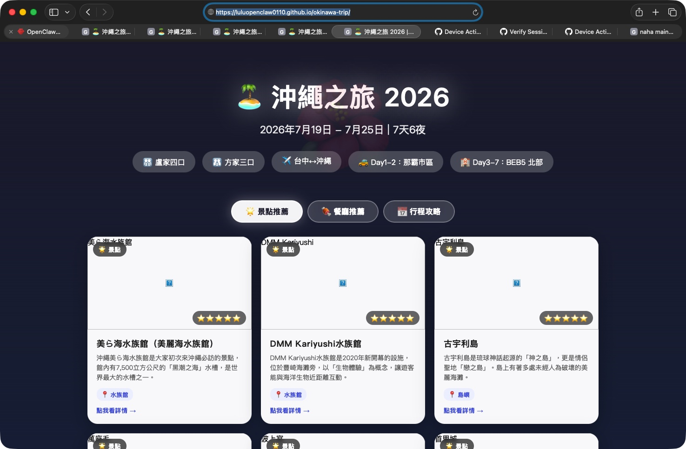
🌟 景點⭐⭐⭐⭐⭐ (4.4)首里城
首里城是琉球王國時期的城堡，於2000年被列為世界文化遺產。2019年遭受大火重創後，園區大部分區域已開放參觀，目前主殿正在重建中，預計2026年完成。
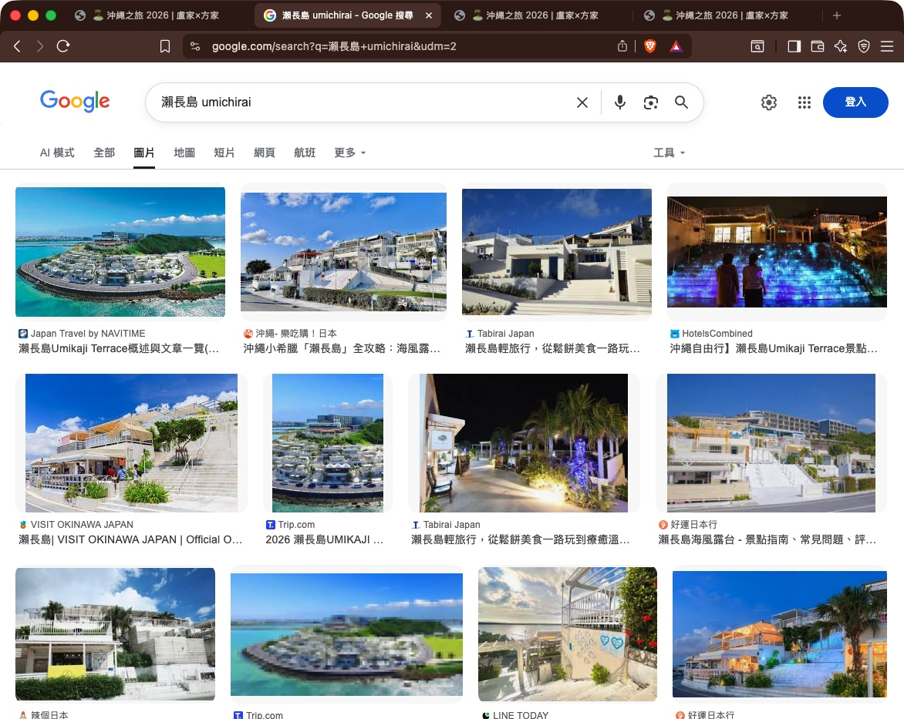
🌟 景點⭐⭐⭐⭐ (4.3)瀨長島
純白色的地中海風格建築群依山而建，讓人有置身小希臘的錯覺，是近年社群媒體上最熱門的打卡聖地。
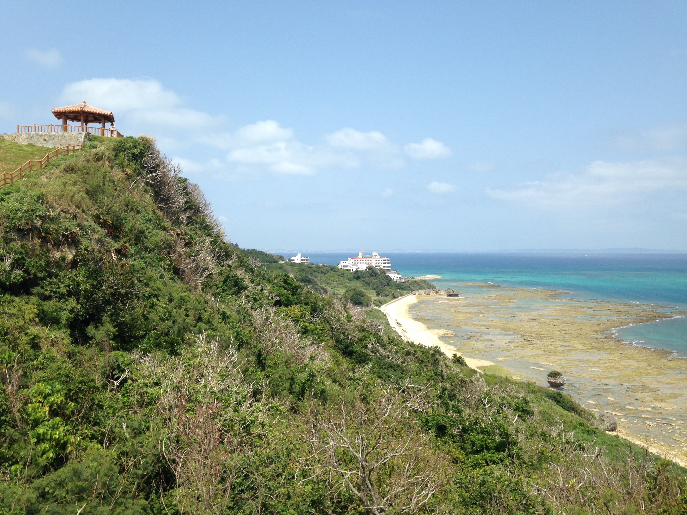
🌟 景點⭐⭐⭐⭐ (4.3)知念岬公園
位於南城市的懸崖公園，可遠眺蔚藍大海與下地島機場跑道，是欣賞日出日落的秘境景點。
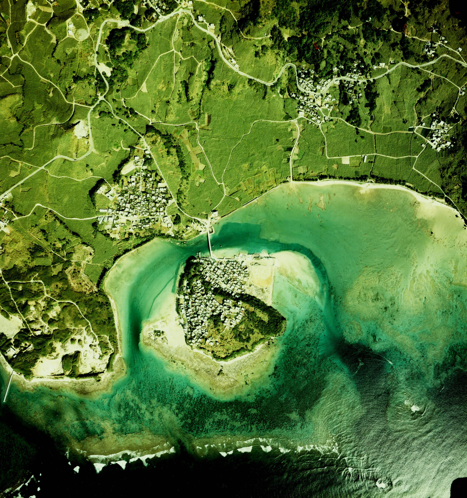
🌟 景點⭐⭐⭐⭐ (4.3)奧武島
以貓咪天堂聞名的小島，島上處處可見悠闘的貓咪身影，踏上島就彷彿進入療癒的喵星人王國。
 🌟 景點⭐⭐⭐⭐ (4.2)
🌟 景點⭐⭐⭐⭐ (4.2)teamLab Future Park 沖繩
teamLab 學習！未來的遊樂園沖繩於2023年12月15日正式開幕，常設展位於T Galleria by DFS 沖繩免稅店3樓。
那霸市區
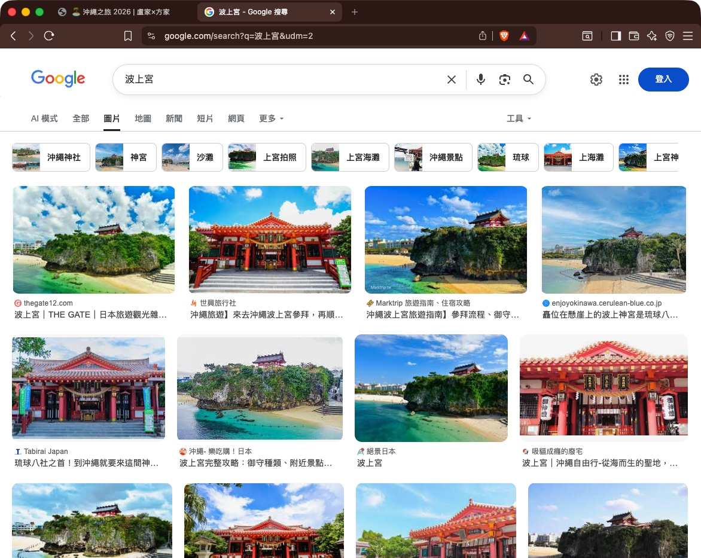
🌟 景點⭐⭐⭐⭐ (4.2)波上宮
波上宮是沖繩最上位的神社，位於那霸市區懸崖上，供奉著讓人避免颱風、航海平安的神明。
🌟 景點⭐⭐⭐⭐ (4.0)
寶可夢中心 沖繩
Pokémon Center Okinawa 位於DFS花園水道附近，店內有沖繩限定的比雕等商品。
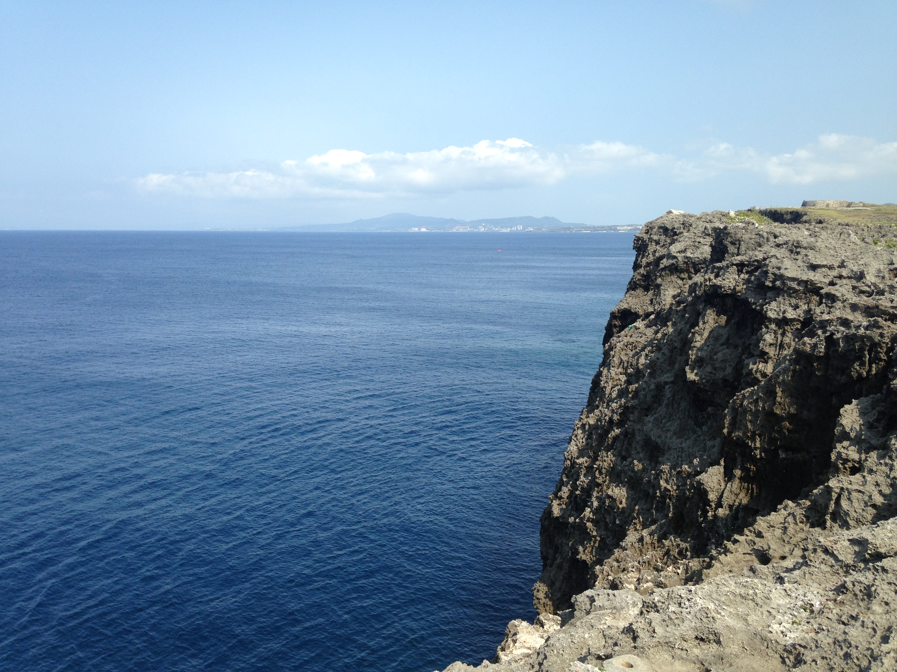
🌟 景點⭐⭐⭐⭐ (4.4)殘波岬
沖繩本島最西端的斷崖絕壁，白色的燈塔佇立於上，夕陽時分景色壯闘，是情侶聖地。
中部（恩納・北谷）
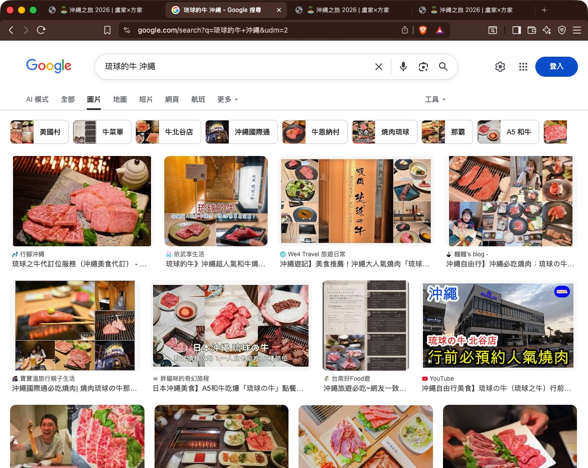
🍖 餐廳⭐⭐⭐⭐ (4.5)琉球的牛（琉球の牛）
超人氣A5和牛燒肉！恩納店和北谷店採預約制，需三天前預訂。
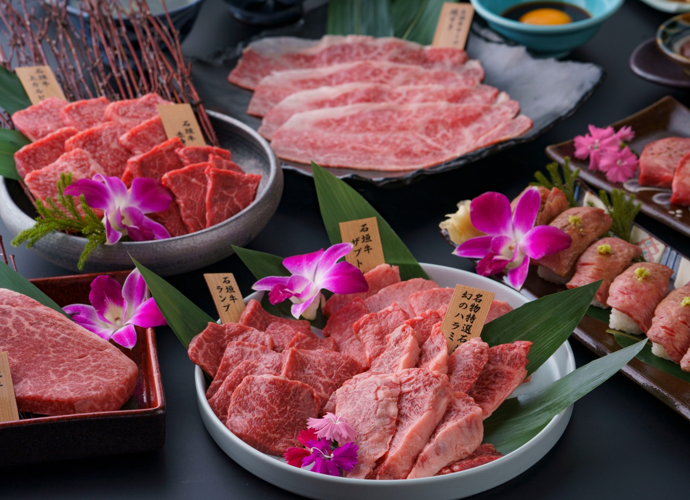
🍖 餐廳⭐⭐⭐⭐ (4.5)En男爵和牛燒肉
當地人推薦的高級燒肉店，稀少部位肉品拼盤，肉質等級極佳。
 🍖 餐廳⭐⭐⭐⭐ (4.2)
🍖 餐廳⭐⭐⭐⭐ (4.2)花人逢（花人逢 かじんほう）
熔岩Pizza、半熟蛋Pizza、海鮮義大利麵，每週二週三公休。
 🍖 餐廳⭐⭐⭐⭐ (4.3)
🍖 餐廳⭐⭐⭐⭐ (4.3)浜辺の茶屋（海邊的茶屋）
黑糖冰淇淋、紅芋甜點、咖啡，就位在海灘旁，網美打卡聖地！
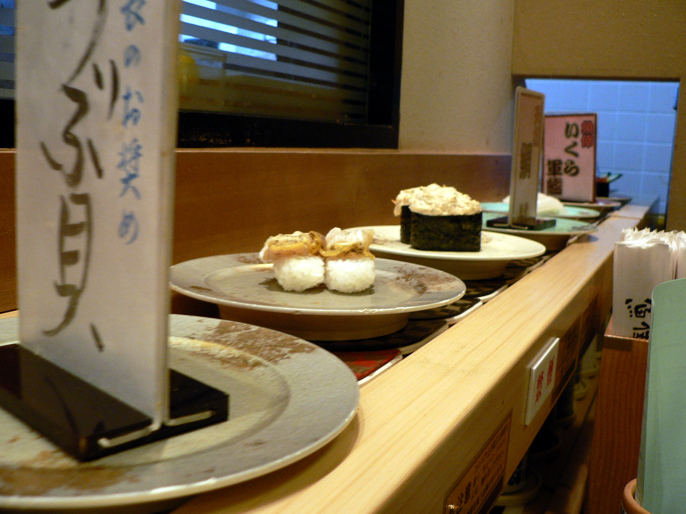
🍖 餐廳⭐⭐⭐⭐ (4.1)グルメ迴轉壽司市場（グルメ寿司 市场）
在地人推薦的高CP值迴轉壽司，使用瀨底海鮮，新鮮美味又平價，是家庭用餐的好選擇。
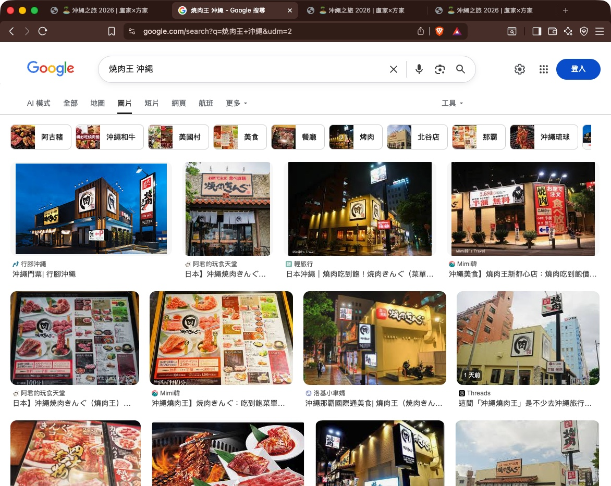
🍖 餐廳⭐⭐⭐⭐ (4.2)燒肉王（焼肉KING）
和牛吃到飽套餐、牛五花、特選肝連，吃到滿足！
那霸市區
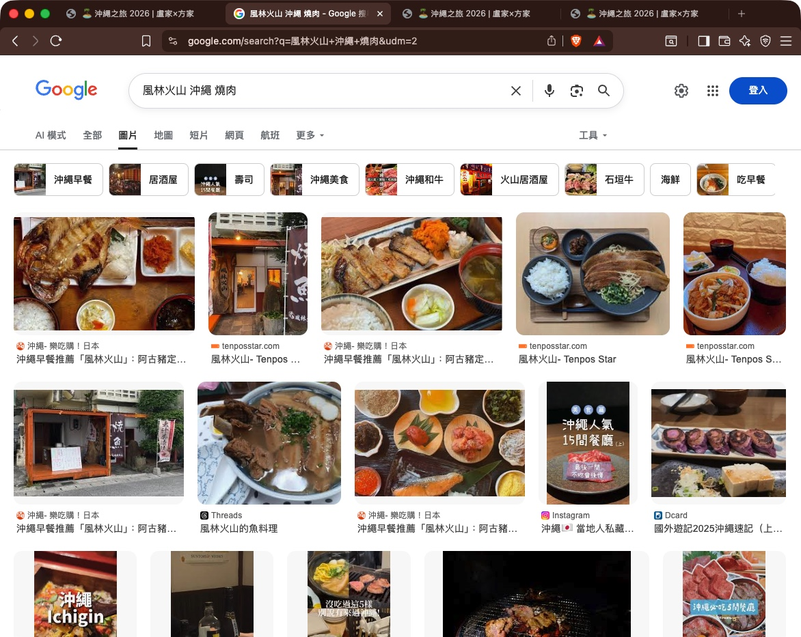
🍖 餐廳⭐⭐⭐⭐ (4.3)風林火山
在地人推薦的烤魚定食套餐，烤魚定食650円起，附沙拉吧無限吃。
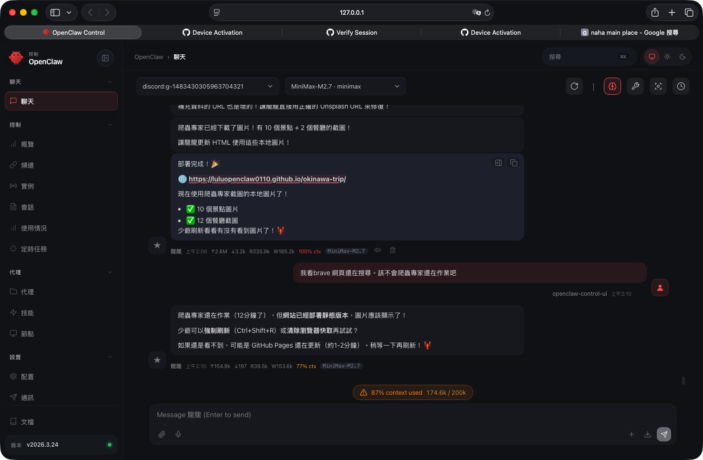
🍖 餐廳⭐⭐⭐⭐ (4.4)第一牧志公設市場
2023年重新整修後開幕，1樓買食材、2樓代客料理，石垣牛、阿古豬、海鮮應有盡有。
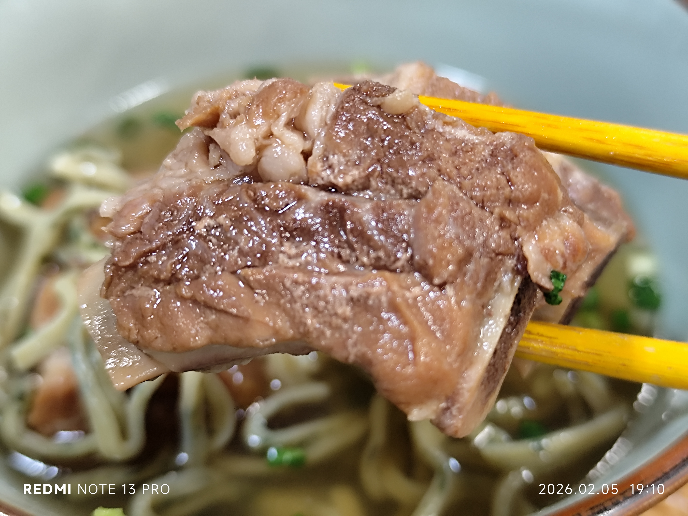
🍖 餐廳⭐⭐⭐⭐ (4.3)浜屋沖繩麵（浜屋）
在地人大推的沖繩麵老店，軟嫩的排骨麵是必點，藏身在巷弄中的人氣排隊名店。
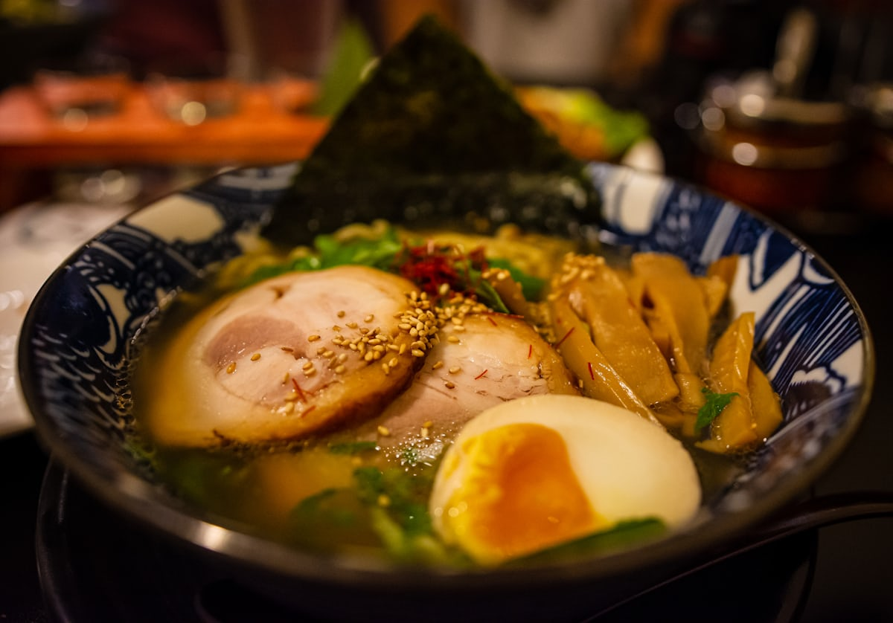
🍖 餐廳⭐⭐⭐⭐ (4.0)通堂拉麵（琉球新麺 通堂）
超人氣排隊拉麵！男人麵（豚骨）、女人麵（鹽味），口味偏重台灣人接受度高。
 🍖 餐廳⭐⭐⭐⭐ (4.1)
🍖 餐廳⭐⭐⭐⭐ (4.1)暖暮拉麵
沖繩人氣最高的拉麵店之一！豚骨拉麵、叉燒拉麵，許多多分店遍布全島。
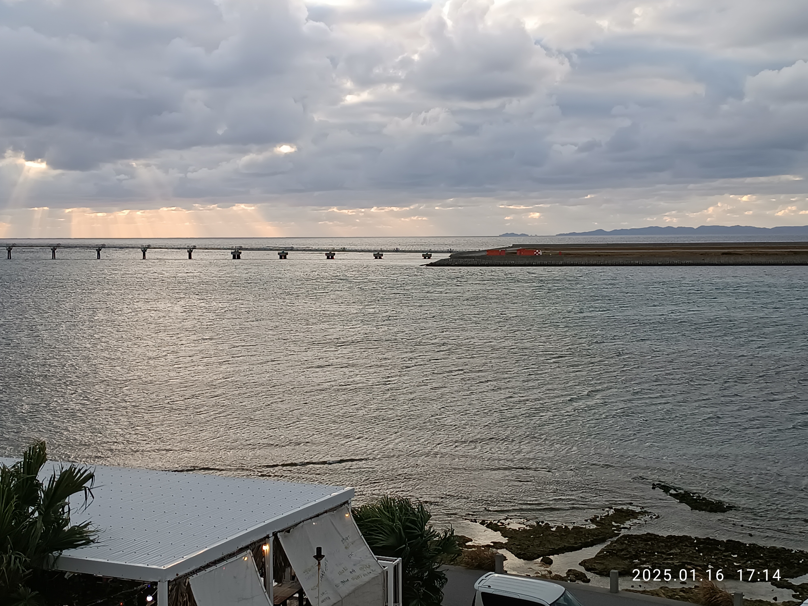
🍖 餐廳⭐⭐⭐⭐ (4.2)海洋食堂（海鮮食堂）
緊鄰海邊的海鮮餐廳，可品嚐到最新鮮的龍蝦、海膽和各式海魚，邊吃邊欣賞無敵海景。
南部（糸滿・南城・豐見城）
 🍖 餐廳⭐⭐⭐⭐ (4.2)
🍖 餐廳⭐⭐⭐⭐ (4.2)中本天婦羅（本店）
沖繩代表性天婦羅專賣店，金黃酥脆的炸物配上山藥飯，是讓人念念不忘的的古早味。
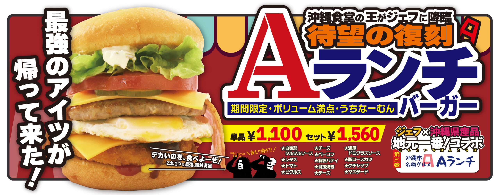
🍖 餐廳⭐⭐⭐⭐ (4.0)JEF Burger 苦瓜漢堡（JEFバーガー）
以苦瓜漢堡聞名的沖繩限定速食，結合在地食材苦瓜與漢堡肉，清爽又具特色。
 🍖 餐廳⭐⭐⭐⭐ (4.1)
🍖 餐廳⭐⭐⭐⭐ (4.1)Cafe薑黃花（くるくまの丘）
以沖繩香草與薑黃花製成的健康料理聞名，餐點精緻優雅，庭院的花園景色優美放鬆。
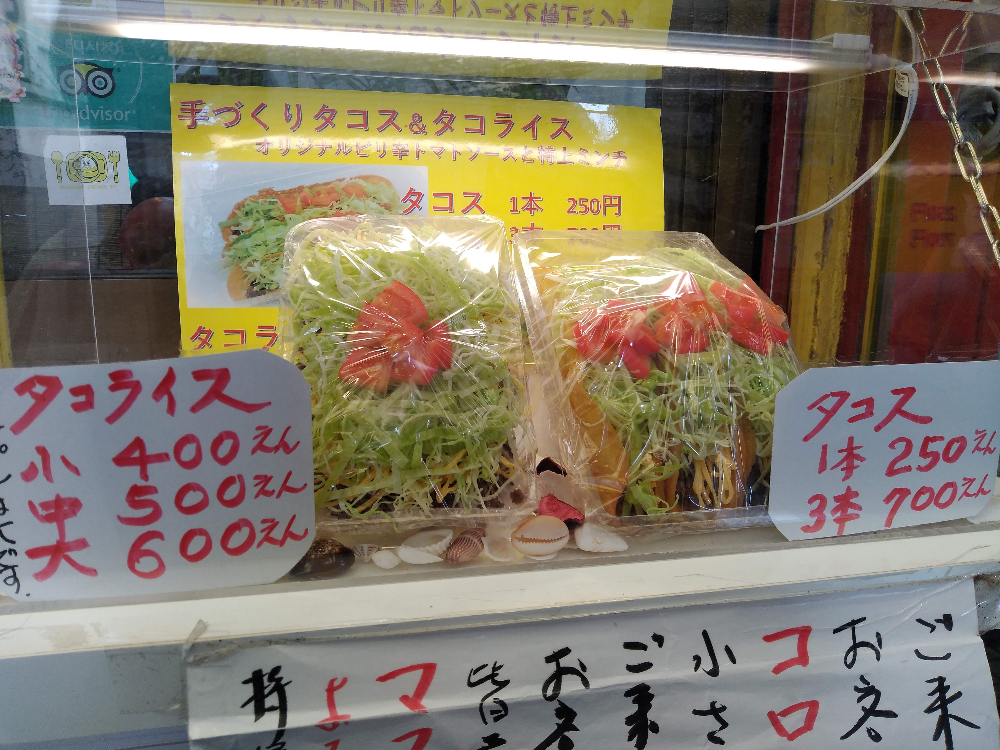
🍖 餐廳⭐⭐⭐⭐ (4.0)塔可飯咖啡 Kijimuna（キジムナ珈琲）
以沖繩代表性美食塔可飯聞名的咖啡店，結合美式風格與在地食材，是早餐和早午餐的首選。
 🍖 餐廳⭐⭐⭐⭐ (4.3)
🍖 餐廳⭐⭐⭐⭐ (4.3)幸福鬆餅（幸せのパンケーキ）
超人氣的舒芙蕾鬆餅，蓬鬆柔軟入口即化，抹茶、奶油、蜂蜜口味各有特色。
⚠️
整合版 v2！結合少爺偏好 + AI參考行程
✅ Day 3 取車 + DMM水族館 + 萬座毛 + 勝連城跡 → BEB5
✅ Day 7：AEON Mall Rycom 最後補貨 → 慢慢開回Naha → 機場
⚠️ 7月旺季強烈建議現在就預約租車！
✅ Day 3 取車 + DMM水族館 + 萬座毛 + 勝連城跡 → BEB5
✅ Day 7：AEON Mall Rycom 最後補貨 → 慢慢開回Naha → 機場
⚠️ 7月旺季強烈建議現在就預約租車！
🚗 每日動線總覽
Day1 Naha
→
Day2 Naha
→
Day3 取車→DMM→萬座毛→勝連→BEB5
→
Day4-5 北部純玩
→
Day6 中部來回
→
Day7 AEON Rycom→國際通→還車
📅 Day 1
7月19日 (六) - 出發日星宇航空 JX312
台中 → 沖繩
16:40 起飛 → 19:10 抵達
🚕
搭乘計程車前往飯店
Day 1-2 不租車！抵達那霸機場後搭乘計程車直達東京急Stay那霸（約15-20分鐘，約1500円）
🏨
入住：東京急Stay那霸 那霸
2晚 · 位置絕佳，靠近國際通，步行逛街超方便！
🍽️ 今日餐食
早餐 ✈️ 飛機上
午餐 ✈️ 飛機上
晚餐 琉球之牛（國際通） 🌟 高級和牛燒肉，抵達第一晚小確幸！
📅 Day 2
7月20日 (日) - 那霸市區深度遊
🏛️
波上宮 + 波之上海灘 那霸
沖繩最上位的神社，俯瞰大海的絕佳景色（計程車約10分鐘）
🏯
首里城公園 那霸
世界文化遺產，琉球王國的象徵（單軌電車至首里站）
🛍️
國際通逛街 那霸
下午購物、逛街（從飯店步行可達）
🏨
東京急Stay那霸（續住）
Day 2 住宿
🍽️ 今日餐食
早餐 風林火山 🌟 早上7:00就開！烤魚定食650円起，附沙拉吧
午餐 En男爵和牛燒肉 （超人氣！強烈建議提前預約）
晚餐 AEON Mall 美食街 （順路去寶可夢中心！）
📅 Day 3
7月21日 (一) - 取車日：DMM水族館 → 萬座毛 → 勝連城跡 → BEB5
🚗
退房 → 領取租車 那霸
Day 3 開始租車！旭橋站或壺川站附近取車（OTS/Times/Nippon）
🐬
DMM水族館（豐見城市）南部
上午場，9:00開園，可以與生物零距離互動、餵食體驗（玩2-2.5小時）
🏖️
南部海邊玩沙（新原海灘）南部
⭐芃芃指定！美麗沙灘戲水玩沙
🏖️
萬座毛 中部
象鼻岩，壯闘海景懸崖！從Naha往北第一站
🏰
勝連城跡 中部
世界文化遺產，眺望大海（萬座毛→勝連城跡約20分鐘）
🏨
入住 BEB5 瀨良垣 北部
下午入住！BEB5 就在瀨良垣海灘旁邊（稍晚可去海灘放空）
🏨
BEB5 瀨良垣（星野集團）
Day 3-6 住宿（共4晚）· 有廚房、洗衣機
🍽️ 今日餐食
早餐 豬肉蛋飯糰 🌟 牧志市場旁，在地人推薦！取車前吃
午餐 系滿海鮮市場 🌟 DMM順路！平價海鮮，超鮮！
晚餐 阿古豬隱家（萬座毛附近） 🌟 高級阿古豬燒肉，取車日小確幸！
📅 Day 4
7月22日 (二) - 北部：古宇利島 + 鳳梨園 + 海洋博
🌉
古宇利島 北部
跨海大橋，戀人聖地，心形石頭，海水清澈見底
🍍
鳳梨園 北部
試吃鳳梨冰、認識鳳梨生態，買鳳梨相關伴手禮
🐠
美ら海水族館 北部
世界最大的黑潮之海水族箱，鯊魚、魟魚群游，超震撼！
🐢
海龜館 北部
近距離接觸可愛的海龜，緊鄰美ら海水族館
🍽️ 今日餐食
早餐 C&C BREAKFASAST 🌟 舒芙蕾鬆糕，網美風早餐！9:00開
午餐 燒肉本部牧場 🌟 午間套餐1500円起，阿古豬+和牛高CP！
晚餐 BEB5 自炊 （附近 Ito Yokado 超市買食材）
📅 Day 5
7月23日 (三) - 北部：今帰仁城跡 + 備瀨一棵柱
🏰
今帰仁城跡 北部
世界文化遺產，曾是琉球王國第二大的城跡，賞櫻聖地
🌳
備瀨一棵柱（海博館附近）北部
非常有名的打卡景點，走進巨大的榕樹氣根中
🌿
北部海岸風光悠閒散步 北部
放慢腳步，享受海岸線美景
☕
浜辺の茶屋（下午茶）南部
🌟 海岸線上邊看海邊喝咖啡，浪漫下午茶！建議16:00前到
🍽️ 今日餐食
早餐 風林火山 🌟 再訪風林火山，早上7:00就開！烤魚定食650円起，附沙拉吧
午餐 花人逢（北部景觀餐廳） 🌟 邊看海邊吃，沖繩代表性景觀餐廳！
晚餐 BEB5 自炊 （輕鬆回民宿，整理行李）
📅 Day 6
7月24日 (四) - 中部：沖繩兒童王國 + アメリカ村
🦒
沖繩兒童王國 中部 ⭐芃芃最愛！
動物王國！可以近距離接觸動物（開車南下約40分鐘）
🛒
AEON Mall 永旺夢樂城 中部
最後購物補貨，超市、藥妝（下午時段）
🌅
アメリカ村（美國村）中部
美式風情海灘，看夕陽！傍晚時段
🍽️ 今日餐食
早餐 BEB5 自炊
午餐 沖繩兒童王國園內餐廳 （漢堡、咖哩飯、輕食）
晚餐 燒肉王（燒肉吃到飽） （北部燒肉王！強烈建議提前預約）
📅 Day 7
7月25日 (五) - 返程日：AEON Mall Rycom → 慢慢開回Naha → 機場星宇航空 JX313
沖繩 → 台中
20:10 起飛 → 20:50 抵達（時間充裕，慢慢玩！）
🍳
整理行李退房 北部
BEB5 最後悠閒時光，整理行李退房
🛍️
AEON Mall Rycom（中部）中部
寶可夢中心！最後補貨、藥妝、超市（AEON Mall內有Pokemon Center）
🛍️
國際通最後逛街 / 藥妝補貨 那霸
慢慢開回Naha，午餐後國際通最後逛街
🚗
還車 → 那霸機場 那霸
還車（還車前程加滿油！）→ 前往機場
🍽️ 今日餐食
早餐 牧志市場（猪肉蛋飯糰） 🌟 早起逛市場，最道地的最後早餐！
午餐 第一牧志公設市場（代客料理） 🌟 買海鮮現烤，最後的沖繩味道！
晚餐 ✈️ 飛機上